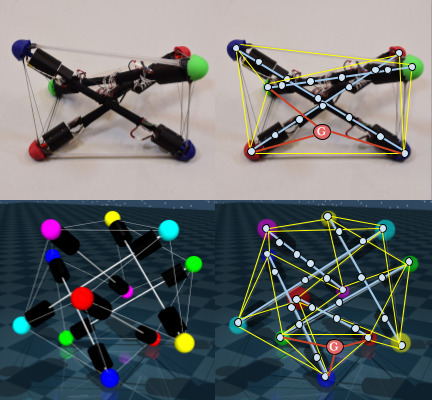

|

|
|
Abstract:
Tensegrity robots are composed of rigid struts and flexible cables. They constitute an emerging class of hybrid rigid-soft robotic systems and are promising systems for a wide array of applications, ranging from locomotion to assembly. They are difficult to control and model accurately, however, due to their compliance and high number of degrees of freedom. To address this issue, prior work has introduced a differentiable physics engine designed for tensegrity robots based on first principles. In contrast, this work proposes the use of graph neural networks to model contact dynamics over a graph representation of tensegrity robots, which leverages their natural graph-like cable connectivity between end caps of rigid rods. This learned simulator can accurately model 3-bar and 6-bar tensegrity robot dynamics in simulation-to-simulation experiments where MuJoCo is used as the ground truth. It can also achieve higher accuracy than the previous differentiable engine for a real 3-bar tensegrity robot, for which the robot state is only partially observable. When compared against direct applications of recent mesh-based graph neural network simulators, the proposed approach is computationally more efficient, both for training and inference, while achieving higher accuracy. Code and data are publicly available here.
|

![[PHOTO]](../../images/knight_small.png)